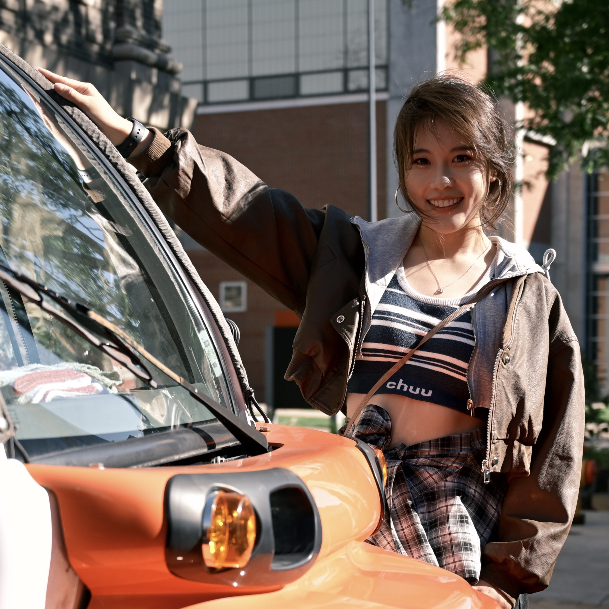
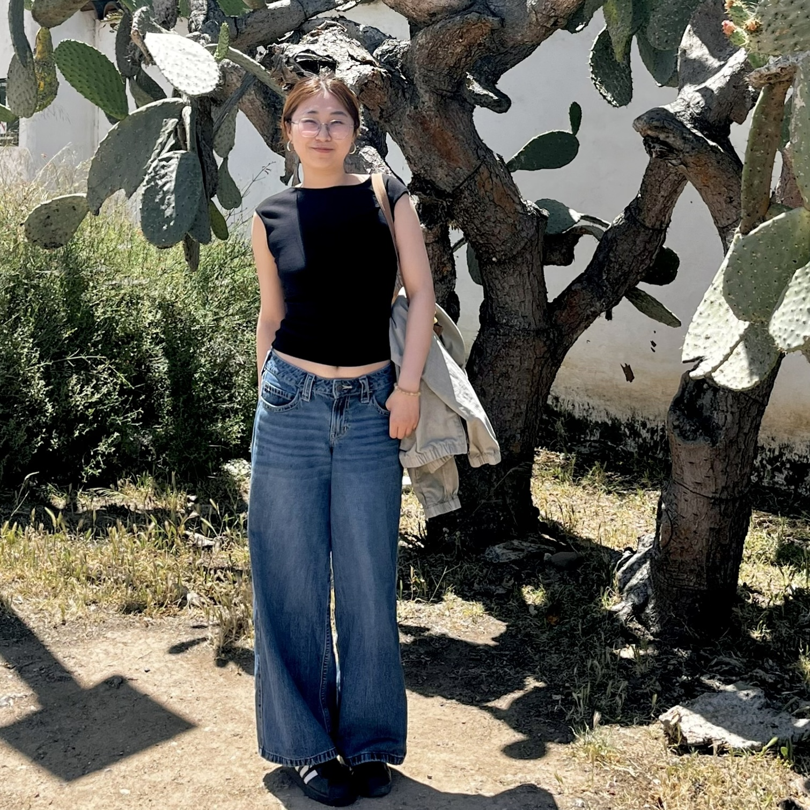
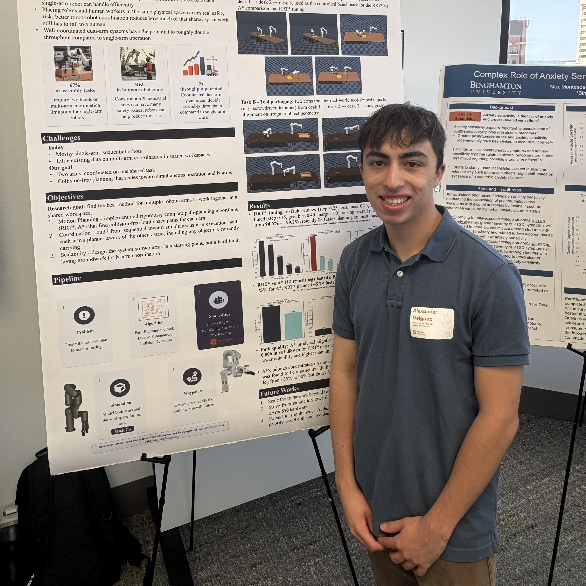

YL
People
An interdisciplinary team advancing robotics for construction.
Our team brings together civil engineering, robotics, artificial intelligence, and sensing to advance intelligent robotic systems for construction.
Director
 YL
YL
Yizhi Liu
Assistant Professor · Civil & Environmental Engineering
Yizhi Liu is an Assistant Professor in the Department of Civil and Environmental Engineering at Syracuse University and the director of the A-STAR Lab. His research focuses on construction robotics, human-robot collaboration, robotic teleoperation, robot path planning, and physiological sensing for worker health and safety.
He received his Ph.D. in Architectural Engineering from Penn State University, under the supervision of Prof. Houtan Jebelli . He also holds master's degrees in Robotics, Electrical Engineering and Computer Science, and Construction Engineering and Management from Columbia University, Penn State, and the University of Michigan, respectively.
Members
Current Members

HG
ADAlumni
Alumni & Former Members
2025
Dong Zheng
Aug–Nov 2025Research Associate
2026
Noah Daniel Rewakowski
Feb–May 2026Undergraduate Research Assistant
Openings
Interested in joining A-STAR Lab?
We welcome inquiries from prospective PhD students, master's students, undergraduate researchers, postdoctoral researchers, and collaborators whose interests align with our work.